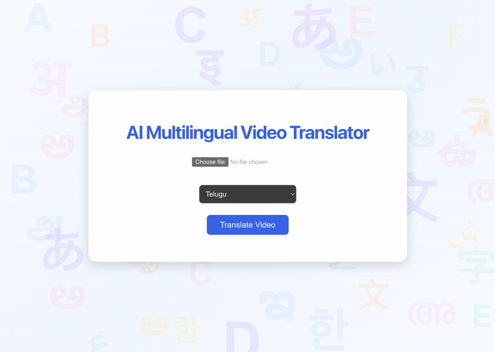
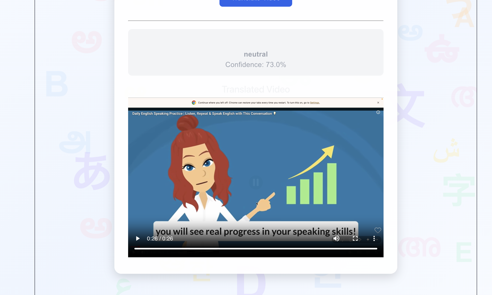

1. Project Overview
The AI Multilingual Video Translator is a web-based application designed to reduce language barriers in video content.
The system processes spoken content from a video, converts the speech into text, translates the text into a selected Indian language and generates translated speech.
The project combines Artificial Intelligence, Natural Language Processing, Speech Processing, and multimedia technologies in a full-stack application.
2. Objectives
Speech Recognition
Convert spoken content from videos into text using AI-based speech recognition.
Language Translation
Translate the recognized text into multiple Indian regional languages.
Speech Generation
Generate audio from the translated text using text-to-speech technology.
Accessibility
Make digital video content accessible to users who speak different languages.
3. Technologies Used
Frontend
React.js, Vite, JavaScript, HTML5, CSS3 and Axios are used to build the user interface and communicate with the backend API.
Backend
Python and FastAPI are used to create the backend API and handle video processing requests.
AI / ML
OpenAI Whisper is used for speech recognition. Google Translator is used for text translation.
Speech & Multimedia
gTTS is used for text-to-speech generation and FFmpeg is used for audio/video processing.
4. Key Features
Video Processing
Process uploaded video files and extract the required audio.
Speech-to-Text
Convert spoken video content into text using Whisper.
Multilingual Translation
Translate the recognized content into selected regional languages.
Text-to-Speech
Generate translated audio from the translated text.
REST API
FastAPI provides backend endpoints for communication with the frontend.
Web Interface
React provides an interactive interface for interacting with the translation system.
5. System Architecture
USER
|
v
React Frontend
|
| HTTP Request
v
FastAPI Backend
|
v
Video Processing
|
v
Audio Extraction
|
v
Whisper
|
v
Speech-to-Text
|
v
Translation Service
|
v
Translated Text
|
v
gTTS
|
v
Translated Audio
|
v
Output Processing
|
v
React Frontend
|
v
USER
6. Project Workflow
- User uploads a video through the frontend.
- The backend receives the video.
- FFmpeg extracts the audio from the video.
- Whisper converts speech into text.
- The recognized text is translated into the selected language.
- gTTS generates speech from the translated text.
- The generated output is returned to the frontend.
7. How to Run the Project
Backend Setup
cd backend python -m venv venv source venv/bin/activate pip install -r requirements.txt uvicorn main:app --reload
Frontend Setup
cd frontend npm install npm run dev
Local URLs
Frontend: http://localhost:5173 Backend: http://127.0.0.1:8000
8. Project Structure
AI-Video-Translator/ │ ├── backend/ │ ├── app/ │ │ ├── api/ │ │ └── services/ │ │ │ ├── outputs/ │ ├── temp/ │ ├── uploads/ │ ├── main.py │ ├── requirements.txt │ └── ... │ ├── frontend/ │ ├── src/ │ │ ├── App.jsx │ │ ├── App.css │ │ └── api.js │ │ │ ├── public/ │ ├── index.html │ └── package.json │ ├── docs/ │ └── index.html │ ├── README.md └── .gitignore
9. Screenshots
Screenshots of the working AI Multilingual Video Translator application demonstrating the user interface and translation workflow.
Application Home Page

Translation Result

10. Future Enhancements
Voice Cloning
Generate translated speech while preserving characteristics of the original speaker's voice.
Lip Synchronization
Synchronize the speaker's lip movements with the generated translated speech.
Emotion Preservation
Preserve emotional characteristics during speech generation.
More Languages
Expand support for additional Indian and international languages.
11. Conclusion
The AI Multilingual Video Translator demonstrates how Artificial Intelligence, Natural Language Processing, Speech Recognition and multimedia processing can be combined to create a practical multilingual application.
The project provides a foundation for building more advanced multilingual video communication systems with future support for voice cloning, lip synchronization and emotion-aware speech.